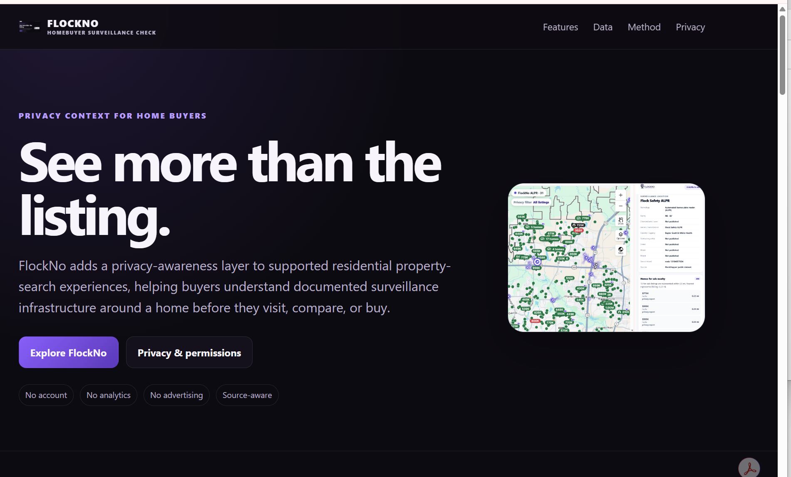
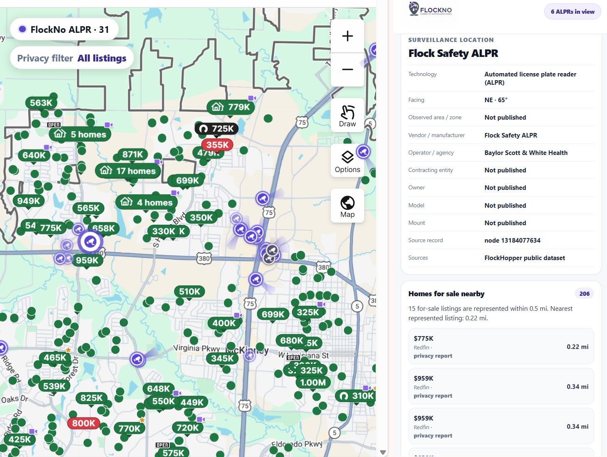
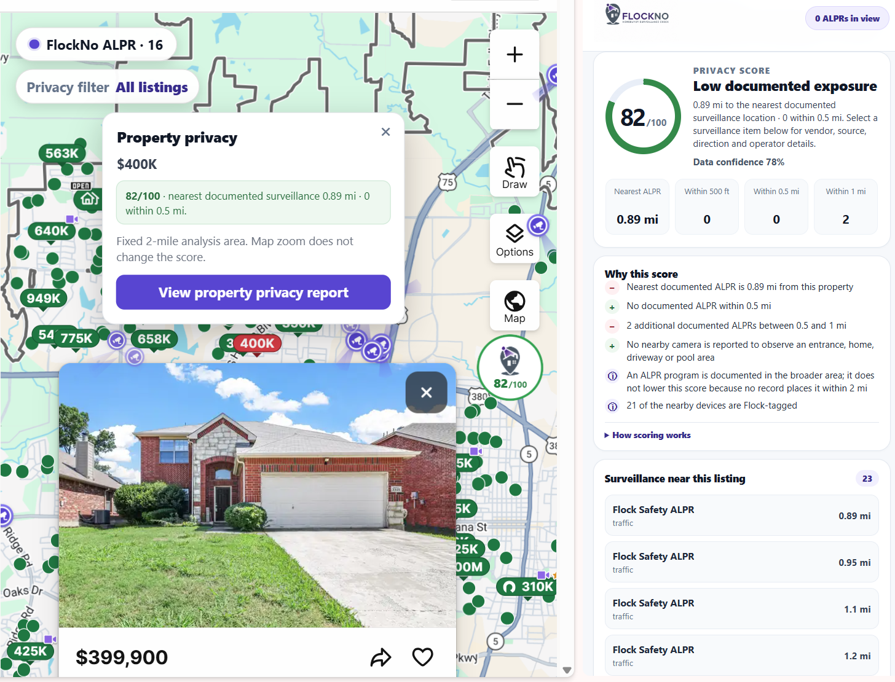

Surveillance on the map
Known surveillance-device locations are placed in geographic context alongside the properties you're already exploring. Markers remain tied to their real-world location as the map moves.
FlockNo adds a privacy-awareness layer to supported residential property-search experiences, helping buyers understand documented surveillance infrastructure around a home before they visit, compare, or buy.

FlockNo supplements the normal property-search experience instead of sending buyers to a separate research tool. Its interface appears where privacy context is useful and stays out of the way when it isn't.
Known surveillance-device locations are placed in geographic context alongside the properties you're already exploring. Markers remain tied to their real-world location as the map moves.
Where reliable directional information is available, FlockNo visualizes orientation and potential coverage context. Unknown direction stays unknown rather than being invented.
A property-specific 0–100 score summarizes observed surveillance exposure using factors such as proximity, device type and relevant directional context. Higher scores indicate lower observed exposure.
FlockNo doesn't stop at a number. Reports surface nearby devices and observations contributing to the result so buyers can understand the context for themselves.
Device details can surface useful published metadata such as type, source, direction, operator or program context when those fields are actually available.
Explore a device, inspect nearby listings, return to a property report, and continue the home search without turning privacy research into a separate workflow.
Surveillance information is fragmented across community-maintained datasets, open geographic records and public program documentation. FlockNo brings complementary published sources into a common experience while retaining provenance.
The current product draws from public surveillance-location data, relevant OpenStreetMap records, and the Electronic Frontier Foundation's Atlas of Surveillance. Different sources answer different questions: one may document a device location, another may add geographic context, while another may document a public agency's surveillance program.
FlockNo is intentionally conservative about what its data can prove. A nearby camera does not automatically mean a property is observed, and an empty dataset does not mean an area is surveillance-free.
Published source records and metadata are presented as source-backed information.
Geographic relationships such as distance are calculated from available location information.
Directional relationships are described cautiously and only when the available geometry supports them.
Missing direction, ownership or coverage is left unknown. FlockNo does not manufacture certainty to fill a blank.
FlockNo keeps the surveillance layer connected to the property-search experience. Explore documented devices on the map, then open a property-specific report that summarizes nearby documented exposure and explains the factors behind the result.


FlockNo requires no account and does not use analytics, tracking pixels, advertising identifiers or behavioral advertising. Most state stays in the browser, and external requests are limited to the data needed to provide the feature and feedback you explicitly choose to submit.